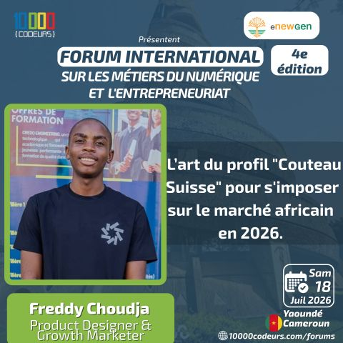
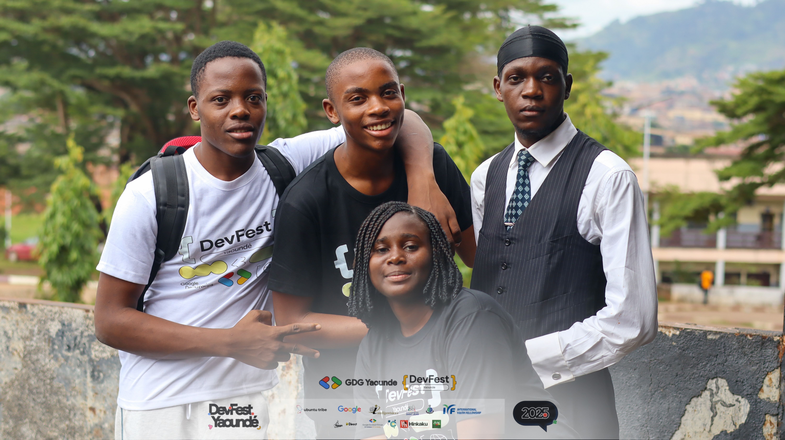
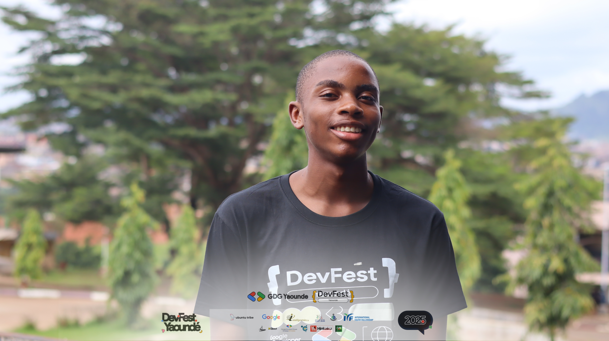
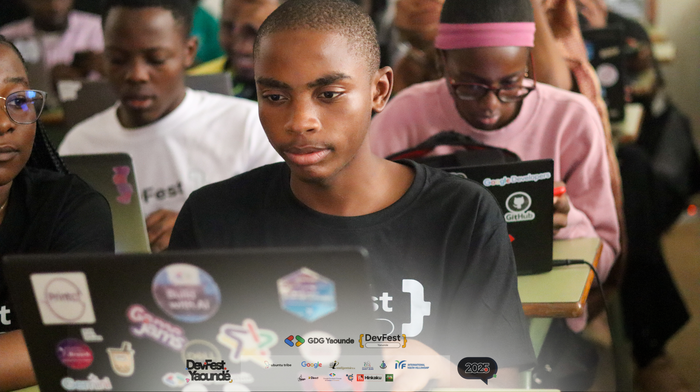

Événements & communauté
Un parcours qui se construit aussi sur le terrain.
Quelques moments de partage, d'apprentissage et de participation à l'écosystème tech camerounais.




Événements & communauté
Quelques moments de partage, d'apprentissage et de participation à l'écosystème tech camerounais.



